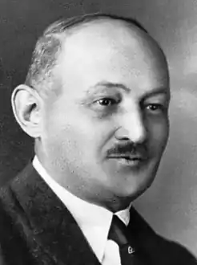
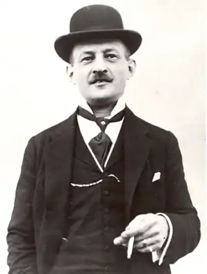

Походив поет із старовинного роду, уславленого колись на всю Європу Яном Єсеніусом — ректором Празького університету, відомим лікарем, філософом і громадським діячем кінця XVI — першої чверті XVII століття. Народився у місті Мартін 30 грудня 1874 року. Син Яна Єсенського-Ґашпаре, відомого адвоката та громадського активіста, співорганізатора Матиці словацької. Освіту здобув у рідному місті, потім в середній школі в містах Банська-Бистриця та Рімавска Собота.
У 1893 році закінчив гімназію в м.Кежмарок. Янко Єсенський обрав кар'єру правника. З 1893 до 1896 року навчався в юридичній академії у Пряшеві. Після чого захистив докторську дисертацію, в результаті чого став у 1900 році доктором права. У 1897 році він одночасно дебютував в періодичній пресі як поет та прозаїк.
Працював правником у Лученці, Битчі, Ліптовському Мікулаші, Мартіні і Нове Мєсто-над-Вагом. У 1905 році здає іспит на адвоката і відкриває власну практику. У 1913 році одружився. Під час Першої світової війни було мобілізовано до армії у 1914 році. Втім Єсенський у 1915 році добровільно здався в полон російським військам. Перебував у таборах для військовополонених, розташованих в Україні та Забайкаллі, де користувався деякими пільгами як слов'янин. Через йому рік дозволено мешкати у Воронежі, а потім — Петроград, де працює в редакції тижневика "Словацькі голоси". Тут Янко Єсенський поглибив своє знання російської літератури, в подальшому ставши популяризатором її у Словаччині. На початку 1919 року кружним шляхом через Владивосток і Японію повертається додому. Працював на державній службі. У 1922 році стає жупаном м. Римавська Собота, а потім м. Нітра. У 1929 році переїхав до Братислави, де він став радником уряду, пізніше віце-президент провінційного бюро Чехословаччини. У 1930–1939 роках був віце-президент Асоціації словацьких письменників, виступав проти фашизму у Словаччині в 1930—1940-х роках. У 1939 році пішов з державної служби. У 1945 році першому зі словацьких письменників присуджено звання народного художника Чехословаччини. Помер 27 грудня 1945 року в Братиславі, Угорщина. ТВОРИ Проза: — Новели (Novely, 1921) — Шлях до свободи (Cestou k slobode, 1933) — Малостранська історії (Malomestsk? rozpr?vky, 1913) — Старі часи (Zo star?ch ?asov, 1935) — Демократи I, II (Demokrati I., II., 1934, 1938) — Листи пані Ольга (Listy sle?ne O?ge, 1970) Поезія: — З полону (Zo zajatia, 1918), — Вірші (Ver?e, 1905) — З віршів Янко Есенський (Z ver?ov Janka Jesensk?ho, 1918 ) — Після бурі (Po b?rkach, 1923) — Вірші Янко Есенський II (Ver?e Janka Jesensk?ho II, 1923) — Наш герой (N?? hrdina, 1944), — Відбитки (Reflexie, 1945) — На злобу дня (Na zlobu d?a, 1945) — Осінні квіти (Jesenn? kvet, 1948, посмертна публікація) — У ночі (Proti noci, 1945)